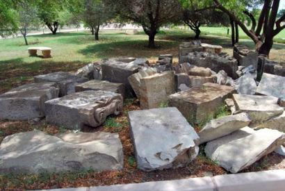
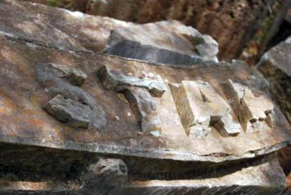
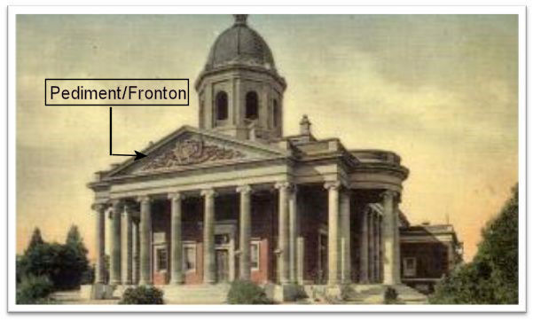
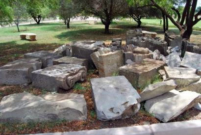
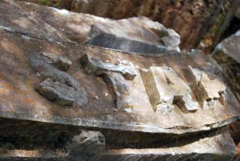
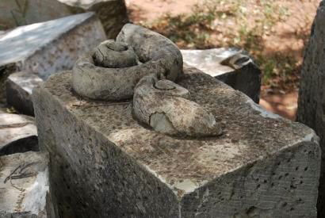
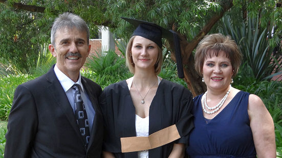

|

|

|

|
|
Index: |
|

The fourth Council Chamber of the House of Assembly of the Republic of the Orange Free State. The War Museum would like to restore the original pediment with the coat-of-arms of the Republic which was removed in 1990 and erect it at the War Museum
|
The War Museum of the Boer Republics in Bloemfontein is responsible for all concervation projects concerning the Anglo Boer War (ABW). Often the museum must self find the funds when projects turn up.
In the past the Henning Family League got involved with a few of the projects of the War Museum, due to the fact that the Executive Committee of the Family League has taken a resolution many years ago to support any cultural project which also commemorate the history of the Henning family or specific members of the family.
Due to the huge and indelible influence the ABW had on the Henning family, the Family League contributed towards the following projects of the Museum:
1. The erection of a Concentration Camp Memorial in 2010 on the terrain of the War Museum;
2. The Wall of rememberance for all Burghers who fell during the ABW which was erected in 2012;
3. The art project commemorating the centenary of the Womens Monument in 2013
|

|
|

|
|

|
First photo show all the blocks which form the pediment. Other photos of individual blocks
Recently the War Museum identified a new project, which fell outside their year planning. This contained the restoration of the pediment of the forth council-chamber of the House of Assembly of the Republic of the Orange Free State - as can be seen on the front page.
Due tot the fact that so many Hennings were citizens of the Republic of the Orange Free State, the Executive Committee of the Family League decided to support this project. We made a donation of R3 000.00.
In 1990 the fourth council-chamber of the House of Assembly in Bloemfontein, which was designed by Lennox Canning, was restored. During this restoration the weather-beaten pediment with the coat-of-arms of the Republic was removed and replaced with a new chiselled coat-of-arms. The original weather-beaten coat-of-arms (Bayswater Sandstone) were moved to and stored at the Presidential Museum - outside - where it was even more damaged. A few pieces was even removed.
This coat-of-arms has a special engagement with the ABW due tot the fact that the British military authorities wanted to remove it during the war, like they did with the coat-of-arms of the ZAR (South African Republic) in Pretoria, which was designed by Anton van Wouw. During the war there was a huge debate in the Friend newspaper whether the coat-of-arms should be removed or not. As a result of the plea by Herbert Baker, the architect of the Union Buildings, it did not happen. Due tot construction at the Presidential Museum, the War Museum requested in 2014 that the remainder of this coat-of-arms — 28 huge stones — be transferred to the War Museum. This application was approved and the remnants of the coat-of-arms were recently transfered to the War Museum.
Although the coat-of-arms is damaged, the Museum would like to reconstruct it in its original pediment configuration. Construction (foundations and building works) of this 12 metres long and three metres high coat-of-arms would be necessary. The full history of the pediment and the council-chamber would be installed at the structure.
As with all the other projects where the Henning Family League got involved, acknowledgement will be given to all the participating organisations — something we as a family could be very proud of. On the noticeboard everybody would be able to see the involvement of the Henning family.

In Newsletter 117 of February 2014 we had an article on the tragic accident in which b5.c1.d1.e1.f9.g4. Izak Stephanus Henning *19-10-1925, his wife and their youngest two sons (3 years and 3 months) died on Christmas day 1962. Their first four children, André Johan (15), Stephanus Albertus (Fanie) (14), Helena Maria (Marinda)(12) and Margaretha (9) were left behind as orphans.

Initially the four children went to stay with their grandmother Van der Westhuizen. In time the two sons were placed in an orphanage and Marinda in a boarding house. The fact that the four children were removed from each other made that they in time lost all contact with each other. Margaretha died at the age of 21 years. Marinda (now 65) married in due course and today have the surname Heunis. She and her family lives in Mandini, Natal.
With the sources to his disposal, the league secretary of the Family League, Olivier Henning, in 2014 were able to provide Marinda with the address of her oldest brother, André. He lives in Milnerton, Cape Town. At that stage Marinda indicated that she and her husband would like to try making contact with André. They last saw each other as children.
Recently we received a letter from Marinda. She and her husband visited Cape Town in December 2014 and found her brother André at the address we provided. In the beginning they could not recognise each other at all, but it was a wonderfull opportunity to end the year of.
Together they tried to make contact with the children of their brother Fanie, through his former wife. Unfortunately this was not possible and Marinda and husband could not stay any longer, due to their return journey which has already been booked. Marinda and André were happy to see each other for two days. They have planned that André were happy to see each other for two days. They have planned that André aand his wife will visit them in Mandini during June 2015, if André's wife's health would allow it.
Marinda thanked the Family League for the assistance given to her.

It is with regret we learnt of the death of the following Henning's over the past three months:
b7.c8.d5.e11.f2. Nicolaas Henning *9-4-1949 lived his life long on the family farm, Golden Valley in the Tarkastad district. He farmed with sheep and cattle. Approximately seven years ago he sold his farm and became a "professional stoopsitter" in Tarkastad. On the sideline he did auctioneering work and a carpet cleaning business. He sold the farm because he could get a good price at that stage.
Nico died on 3 February 2015 due to cancer in the age of 65 years and 10 months.

b6.c4.d1.e5.f5.g6.h2. Jan Sarel Marthinus Henning *24-10-1951. Adv Jan Henning, SC, former Deputy Chief of the National Prosecution Authority (NPA) of South Africa died on 7 March 2015 after a year long struggle against lung- and brain cancer.
According to his son, Jan jnr all his family were present when he died in the Flora Clinic in Roodepoort, where he was treated the past three months.
Several well known and former colleagues brought marks of esteem, eg Adv Bulelani Nguca, founder and former chief of the NPA, Adv Vusi Pikoli, former chief of the NPA, Adv Jan D'Oliveira, former Deputy Chief of the NPA.
In 2007 Jan Henning went on early retirement due to health reasons. After cancer was diagnosed last year, he started writing his book "Stories agter die toga" - Stories behind the robe. The first print of the book was sold out within a few weeks.
Jan Henning's grandfather - also Jan Sarel Marthinus Henning - was one of the biggest heroes during the Anglo Boer war where he served as a 12 years old boy, together with his father and older brother (14 years) in the Rustenburg Commando against the British forces. Pleas read Chapter 13, Part 4 of the Henning Family Cronicle - Seuns onder 16 Jaar onder die wapen (Boys younger than 16 years under arms)

People subscribed to one of the DSTV packages which include the Kyknet Channel, would certainly know about the popular program Kwela hosted by the well-known artist Coenie De Villiers. Every year there are two series with names, Kwela Funnies and Kwela Feite en Geite.
Viewers can enter the "Funnies" competition with one of their humerous home videos and any other interesting home video for the "Feite en Geite" competition. The public participate in the selection of the winners and attractive prices can be won.
On 17 December 2014 b1.c6.d6.e8.f2.g2.h2. Christo Henning *12-9-1976 and his wife Carmen Hanlie (born Pretorius) of Grahamstown won the 2014 Feite en Geite amateur nature video competition with their home video of their cat and a leguan.

Runé van Straaten, second daughter of b7.c8.d8.e5.f5. Rubina Theunissa (Runa) van Straaten (born Henning) and her husband Simon Sauer van Straaten of Doringkloof, Centurion was a student at the Potchefstroom campus of the North West University (NWU) for the past three years. She studied for a B Com (Marketing Management) degree. Runa informed us that Runé obtained her degree with distinction. They as the parents are very proud of both their daughters who obtained their degrees with distinction. The graduation ceremony was on 12 March 2015.
Runé will carry on studying for an Honours degree in International Trade. This will be the last year paying for studies. From next year they would be able to pay back all the loans.
|

Sauer and Runa van Straaten of Doringkloof, Centurion and their beautiful daughter, André at the graduation ceremony on 12 March 2015 at Potchefstroom, where she obtained the degree B Com (Marketing Management) with distinction.
|

We mentioned in the previous newsletter that two persons deposited money during December 2014 into the account of the Family League without mentioning their member numbers or their names. In due course we found out this was Jan Andries Henning of Frankfort and Jacobus Cornelius (Jack) Henning of Noordstad, Bloemfontein. Thank you very much to both these members for their contibutions.
We want to thank those members who contribute by means of a monthly debit order. Even a debit order for as few as R20.00 per month is of great value tot the Family League. Since January 2015 Pieter (PJS) Henning of Ramsgate also contribute in this way. A special word of thanks is necesarry for Jan Andries Henning of Leraatsfontein, Witbank and Jan Hendrik Henning of Glenstantia for their ample contributions.
A word of thanks is also expressed to the following members for their ample once of contributions:
W P (Werner) Henning and his wife Ilse of Cresta - R500.00
Dr M E J (Tjol) Henning and his wife Amanda of Lyttelton, Centurion - R500.00
P H (Piet) Henning and his wife Deidré of Strand - R500.00
M C (Marthinus) Henning and his wife Henesia of Welkom - R400.00
Wiena Wilkinson and her husband Aubrey of Paarl - R370.00
Marinda Heunis (born Henning) and her husband Marthinus of Mandini - R300.00
L D (Leon) Henning and his wife Hetta of Drieriviere, Vereeniging - R300.00
Marlene (M M) Page (born Henning) of Pietersburg - R300.00
All moneys can directly be deposited into the account of the Family League. The particulars are as follows: ABSA Bank Villiersdorp (Branch no 334 612); Account name - Henning Faamiliebond; Account no 2890 610 423. This is a cheque account. Please supply your member number (as shown on the envelope) or your initials and surname as reference for the deposit.

We still have several souvenirs available, which would make very nice birthday presents or can be bought as souvenirs. You can order telephonically (028 840 0113 or cell phone 082 355 3801) or by E Mail at olie4@henning.org. Unfortunatelly postage according to the weight of the parcel must be paid extra. We will therefore have to calculate the postage before you can deposit the money into the account of the Family League. Account particulars are as follows: ABSA Bank Villiersdorp (branch 334 612); Henning Familiebond; Account no 2890 610 423. Please use your member number or initials and surname as reference.
Teaspoons - R50.00 each. Very nice as a set of six with a suger spoon
Suger spoons - R54.00 each
Collar badges - R30.00 each
Cuff Links - R100.00 set. Really beautifull! Can also be displayed in a showcase
Writing pads (50 pages) - R30.00
Henning CD - R125.00 each (postage included)
Henning Family Cronicle (Two volumes) - R450.00 (only five sets still available) Postage R50.00. We will include a free Henning CD
We have an index for all 120 newsletters which appeared over the past 30 years (from 1985 to 2014) available. It consist of 40 pages and can be ordered for R10.00.

The magazine Huisgenoot of 1 January 2015 had a touching article on b9.c1.d2.e1.f6.g5.h1. Pieter David Hendrik Stephanus Henning *17-8-1959 and his eight years old stepson, who is physical and mentally retarded. They love each other intensely. The child have the ability of a two years old child. He is still wearing napkins and cannot talk or walk. He is also hearing impeded.
We have no intention to copy the whole article, but found it so touching and full of pity that we want to share the central idea of the article with our readers.
Pieter and the mother of the boy were married for four year until they got divorced in 2011. The boy, MC Viljoen was born from a previous relationship of his mother, but the biological father refuse to have anything to do with the boy. Pieter and MC, however, always had a very good relationship.
Two months after Pieter got divorced, his former wife phoned him and told him to come and fetch the child, otherwise she is going to drop him in a squatercamp.
Immediately Pieter got on an aeroplane to the Eastern Cape to fetch the child. Since then he took care of MC with love - like one of his own children. He arranged for proper medical care for the boy.
For the past year and a half Pieter has a girlfriend, Laura Steyl (43) who assist him with the alimony of MC. He progress very well and they believe that he will be able to start walking one or other time– but this could still take a long time. In the mean time they give this frail little boy all the love they can. "When this little boy crawls into your heart, he would never crawl out again", says Pieter, with his eyes resting softly on the smiling little child.